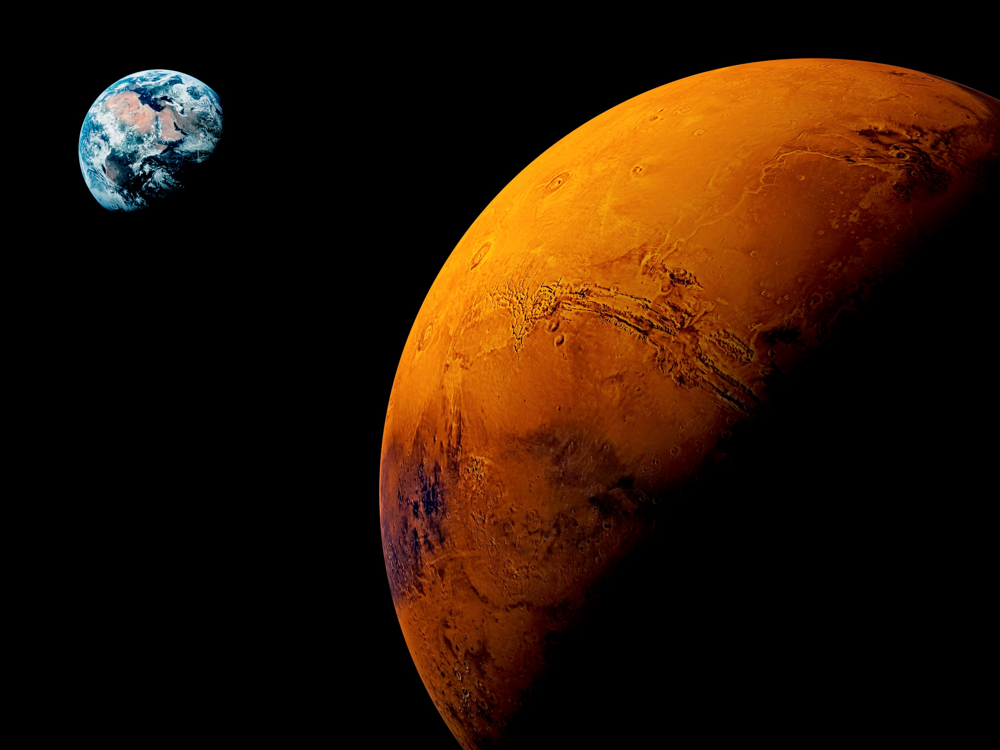

Overview
Mars is the fourth planet from the Sun – a dusty, cold, desert world with a very thin atmosphere. Mars is also a dynamic planet with seasons, polar ice caps, canyons, extinct volcanoes, and evidence that it was even more active in the past. Mars is one of the most explored bodies in our solar system, and it's the only planet where we've sent rovers to roam the alien landscape.